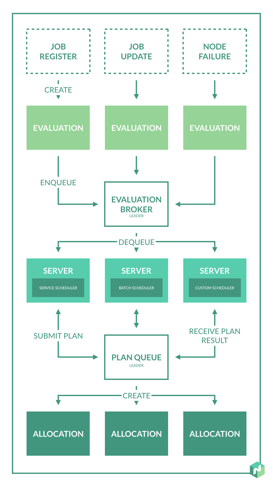

Nomad是Hashicorp公司推出的一个集群管理与工作负载调度器，支持多种驱动形式的工作负载调度，包括Docker、微服务、原生可执行程序等，并支持跨数据中心调度。Nomad不负责服务发现模块，由Consul（也是Hashicorp公司的产品）负责。
Nomad特性
- 部署容器和传统应用
- 简单可靠
- Nomad可作为一个二进制文件独立运行，将资源管理和调度集成一个系统中。
- Nomad能自动处理故障，发生故障时通过leader election和state replication提供高用性。
- 设备插件和GPU支持
- Nomad使用设备插件来自动检测和利用来自硬件设备的资源，如：GPU，FPGA等。
- Nomad为AI、ML等GPU工作负载提供内置支持.
- 可扩展性
- Nomad使用乐观并发调度，增加吞吐量的同时减少了工作负载的延迟。
内部实现
术语
- Job - Job是用户提供的规范，向Nomad声明了需要的负载。Job是期望状态的一种形式，用户表达的是Job应该运行，而不是应该运行的位置。Job由一个或多个task组成。
- Task Group - 任务组和一组必须一起运行的任务，任务组是调度的单位，意味着整个组必须在同一个客户端节点上运行，且不能拆分。
- Driver - Driver表示执行任务的基本手段。例如：Docker，Java，二进制文件等。
- Task - Task是Nomad中最小的工作单元，任务由Driver执行，这使得Nomad在支持的任务类型上更加灵活，任务指定它们的驱动，驱动配置，约束和所需要的资源。
- Client - Nomad客户端是可以运行任务的机器，所有客户端都运行Nomad代理，代理负责向服务器注册，监视任何要分配的工作并执行任务。Nomad代理是一个与服务器保持长连接的进程。
- Allocation - 分配是作业中的任务组和客户端之间的映射。单个作业可能有数百或数千个任务组，这意味着必须存在相同数量的分配来将作业映射到客户端机器。分配是由Nomad服务器创建的，作为调度决策评估的一部分。
- Evaluation - 评估是Nomad做调度决策的机制。当期望状态(job)或实际状态(client)发生变化时，Nomad会创建一个新的评估来确定是否必须采取某些措施。如果需要，评估会导致分配发生变化。
- Server - Nomad服务器是集群的大脑。每个区域都有一个服务器集群，它们管理所有作业和客户端，执行评估，创建任务分配。服务器在彼此之间复制数据，并执行领导者选举，以确保高可用性。
- Regions and Datacenters - Nomad将基础设备划分为区域和数据中心，区域内可能包含多个数据中心。服务器被分配到某个区域，管理该区域内的状态并做出调度决策。数据不会在区域间复制。
- Bin Packing - 装箱是以最大化箱子利用率的方式将物体装入箱子的过程。在Nomad，client就是箱子，任务组是物体，争取让任务组最大化的利用client资源。
总体框架

- 在每个区域内，都包含Client和Server，Server负责从用户处接收作业，管理客户端，并进行调度。
- 每个区域可能有来自多个数据中心的客户端。
- 区域内的服务器都是一个共识组的一部分，意味着它们会共同选举出一个leader server，leader负责处理所有的查询和事务。Nomad是乐观并发的，也就是说所有的服务器都会参与制定调度决策，leader提供额外的必要协调，确保安全的调度以及客户端不会任务超额。
- 每个区域预计三到五个服务器，这在故障情况下的可用性与性能之间取得了平衡，因为随着服务器的增加，服务器之间的一致性会变得越来越慢。客户端数量没有限制。
- 客户端通过RPC与其区域内服务器进行通信，以注册自身、发送活动心跳、等待新的分配以及更新分配状态。客户端想服务器注册，提供可用资源、属性和安装的驱动程序。服务器使用这些信息来安排决策，并创建分配将工作分配给客户端。
- 用户通过命令行或接口向服务器提交作业，作业代表期望状态并提供需要运行的一组任务。服务器负责调度任务，这是通过为每个任务找到一个最佳位置来完成的，以便在满足作业指定的所有约束条件的同时最大化资源利用率。资源利用通过装箱来实现最大化，在装箱中，调度试图利用机器的所有资源而不耗尽任何维度。作业约束可用于确保应用程序在适当的环境中运行。约束可以是基于硬件特性(如体系结构和图形处理器的可用性)的技术要求，也可以是软件特性(如操作系统和内核版本)，也可以是业务约束(如确保兼容PCI的工作负载在适当的服务器上运行)。
调度

- Job是对要运行的任务的声明性描述，这些任务受约束并需要资源。
- 作业中的任务到客户端的映射是使用分配来完成的。
- 分配用于声明作业中的一组任务应该在特定节点上运行。
- 调度是确定适当分配的过程，是评估的一部分。
当外部状态（无论期望还是紧急）发生变化时，都会创建一个评估。期望状态基于Job，如果提交了新的Job，更新了现有的Job或取消了Job注册，期望状态会发生变化。紧急状态基于客户端节点，因此我们必须处理系统中任何客户端的故障。这些时间触发一个新的评估的产生，Nomad评估状态，使其与期望状态相一致。
评估的流程：
- 评估的生命周期始于导致创建评估的事件，例如：Job注册、更新、取消，节点发生故障等。这些事件会触发一个新的评估。
- 评估创建后进入 评估代理的队列。评估代理运行在leader服务器上，用于管理待定评估的队列，提供优先级排序，并确保至少一次交付。
- 从评估代理的队列中取出评估，然后发送到Job指定的调度器。Nomad附带了服务调度器、批处理调度器、系统调度器以及核心调度器，也支持用户自定义的调度器。
- 调度器负责处理评估并生成分配计划。该计划会用于创建、更新或删除一组分配。用于生成计划的特定逻辑可能因调度程序而异，但通常调度程序需要首先将期望状态与实际状态进行协调，以确定必须做什么。需要增加新的分配可能需要更新、迁移或停止现有的分配。
- 处理分配分为两个不同的阶段，可行性检查和排名：
- 第一阶段，可行性检查，调度器通过过滤不健康的节点（发生故障）、缺少必要驱动程序的节点以及没有通过指定约束的节点来找到可行的节点。
- 第二阶段，排名，调度器对可行节点进行评分，以找到最合适的节点。评分主要基于装箱，装箱用于优化应用程序的资源利用率和密度，但也通过相似性和反相似性规则得到增强。Nomad会自动应用一个作业反相似性规则，该规则不鼓励将一个任务组的多个实例放在一起。这种反相似性和装箱的组合优化了密度，同时降低了发生相关故障的概率。
- 一旦调度器对足够多的节点进行了排序，就选择排序最高的节点并将其添加到分配计划中。
- 当计划完成时，调度器将计划提交给leader服务器，leader服务器将计划添加到计划队列中，计划队列管理待定计划，提供优先级排序。Nomad会在leader服务器中处理并发竞争，多个调度器并行运行，没有锁定和保留，采用乐观并发调度，因此调度器可能会在同一个节点上重复工作，导致资源过度订阅。计划队列允许leader服务器对此进行保护，并对计划进行部分或全部拒绝。
- 当leader处理计划时，会在没有冲突时创建分配，否则会将计划结果的失败通知给调度器。计划结果向调度器提供反馈，允许在先前计划被部分会全部拒绝时终止或更新替代计划。
- 一旦调度程序处理完评估，它就会更新评估的状态，并向评估代理确认交付。这就完成了评估的生命周期。作为评估的结果，创建、更新或删除的分配将由客户端节点提取并开始执行。
Preemption
- 抢占允许Nomad取消现有的分配，以便分配更高优先级的作业。在集群有能力运行之前，被取消的分配时临时转移的。
- Nomad中的每项作业都有与之相关的优先级。优先级通过相应地对各个队列进行排序来影响评估的调度和计划的状态。
- Nomad调度器会驱逐较低优先级的运行分配，释放容量用于相对较高优先级作业，产生新分配，被驱逐的分配发送回计划队列。
本文参考Nomad官方文档